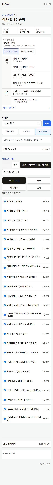
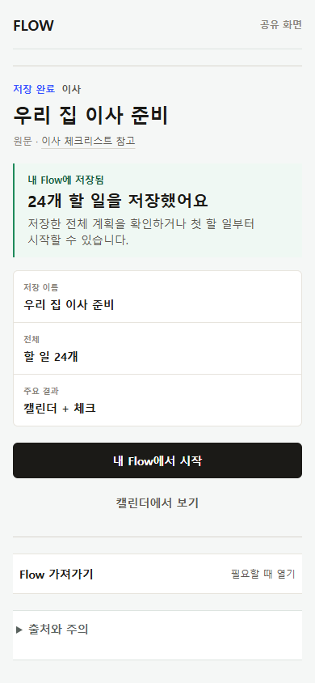
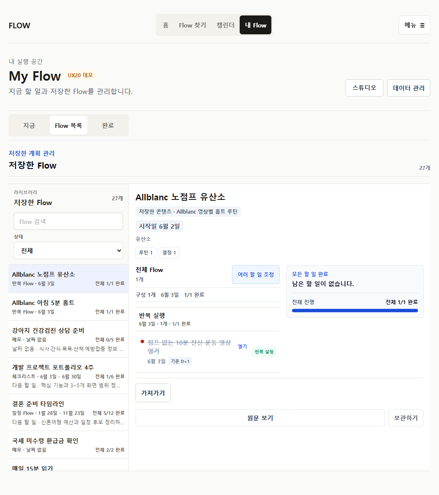
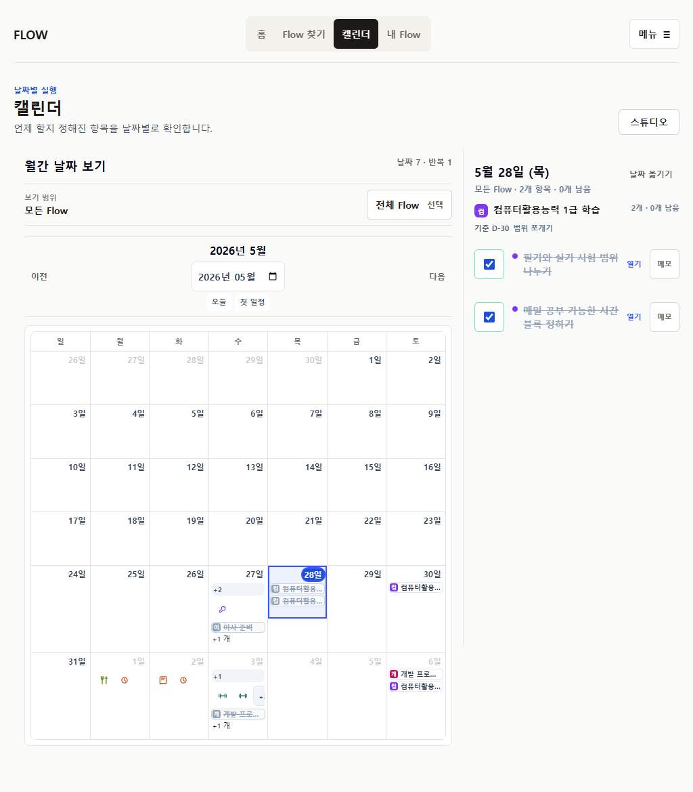
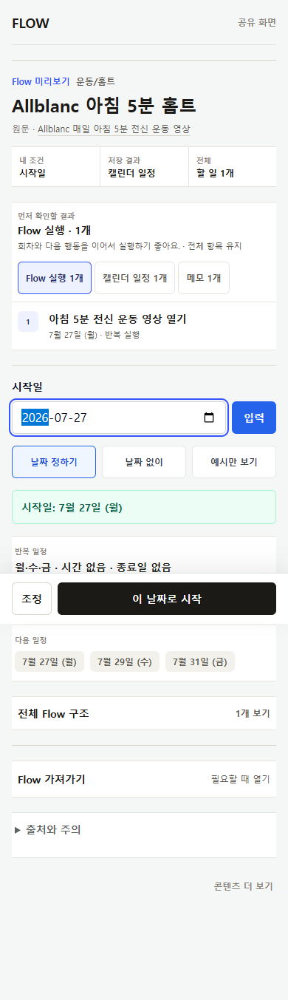
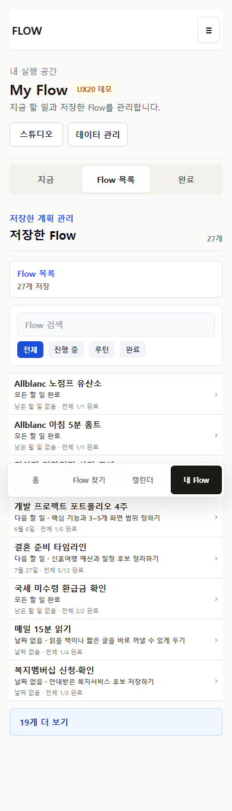

Artifact-first save-before
- 실제 Calendar/Checklist/Sheet/Memo 결과가 먼저
- 전체 outline은 한 disclosure
- 조정 전 row edit 0
- 저장 후 별도 receipt
FLOWME · P29 FINAL REVIEW · 2026-07-22
P28 데이터·identity 계약을 유지한 채 save-before, receipt, routine, My Flow, Calendar, export를 artifact-first와 action-first 문법으로 재구성했다.
PRODUCTION RELEASED · INDEPENDENT REVIEW PENDING현재 branch에서 직접 실행한 command/browser evidence다. 실제 사용자 관찰은 포함하지 않는다.
각 화면이 모든 기능을 펼치는 대신 지금 필요한 판단 하나를 앞에 둔다.








| 계약 | P29 결과 | 판정 |
|---|---|---|
| source / personal overlay | 원본을 수정하지 않고 기존 personal value와 order를 소비 | 유지 |
| execution run / occurrence | 완료·reopen이 series와 structural membership을 바꾸지 않음 | 유지 |
| Calendar / export identity | 기존 stable key와 export plan을 재사용 | 유지 |
| save payload / localStorage | schema와 migration 변경 없음 | 유지 |
| 4탭 IA / public shell | 탭과 `/f` 역할 유지, composition만 변경 | 유지 |